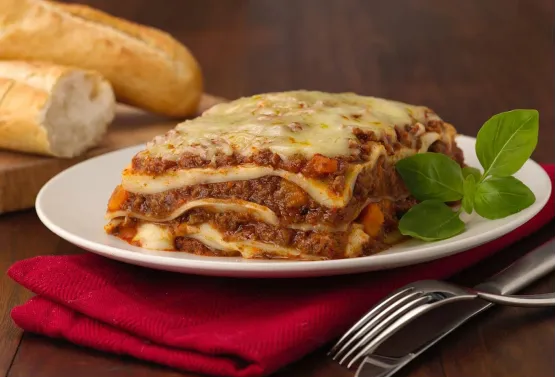

Ingredientes:
- 500g de carne moída
- 1 cebola picada
- 2 dentes de alho picados
- 1 lata de tomate pelado (400g)
- 2 colheres de sopa de extrato de tomate
- 1 cenoura ralada (opcional)
- 1 folha de louro
- 1 colher de chá de orégano
- Sal e pimenta a gosto
- Azeite para refogar
- 50g de manteiga
- 50g de farinha de trigo
- 500ml de leite
- Noz-moscada a gosto
- Sal e pimenta a gosto
- 250g de massa para lasanha (pré-cozida ou pronta para ir ao forno)
- 300g de queijo mussarela fatiado ou ralado
- 100g de queijo parmesão ralado

Modo de Preparo:
- Em uma panela, aqueça um fio de azeite e refogue a cebola e o alho até dourarem.
- Adicione a carne moída e cozinhe até que fique bem dourada.
- Acrescente o tomate pelado, o extrato de tomate, a cenoura ralada, o louro, o orégano, o sal e a pimenta. Cozinhe por cerca de 20 minutos, até o molho engrossar. Reserve.
- Em uma panela, derreta a manteiga e adicione a farinha de trigo. Cozinhe por alguns minutos, mexendo sempre.
- Aos poucos, adicione o leite, mexendo para não empelotar. Cozinhe até engrossar.
- Tempere com sal, pimenta e noz-moscada. Reserve.
- Em um refratário, espalhe uma camada fina de molho à bolonhesa no fundo.
- Coloque uma camada de massa de lasanha.
- Cubra com uma camada de molho à bolonhesa, seguida de uma camada de molho branco e fatias de queijo mussarela.
- Repita as camadas até acabarem os ingredientes, finalizando com molho branco e queijo parmesão ralado por cima.
- Leve ao forno pré-aquecido a 180°C por cerca de 30 a 40 minutos, ou até a lasanha estar dourada e borbulhante.